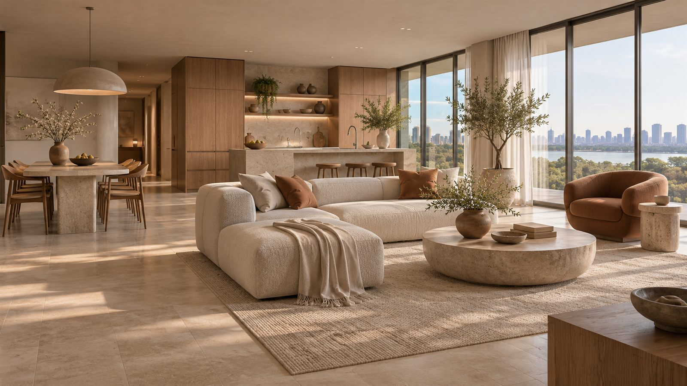
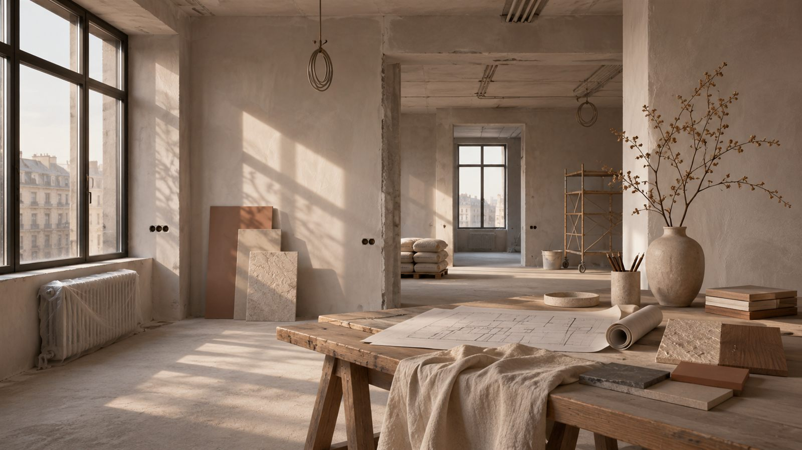
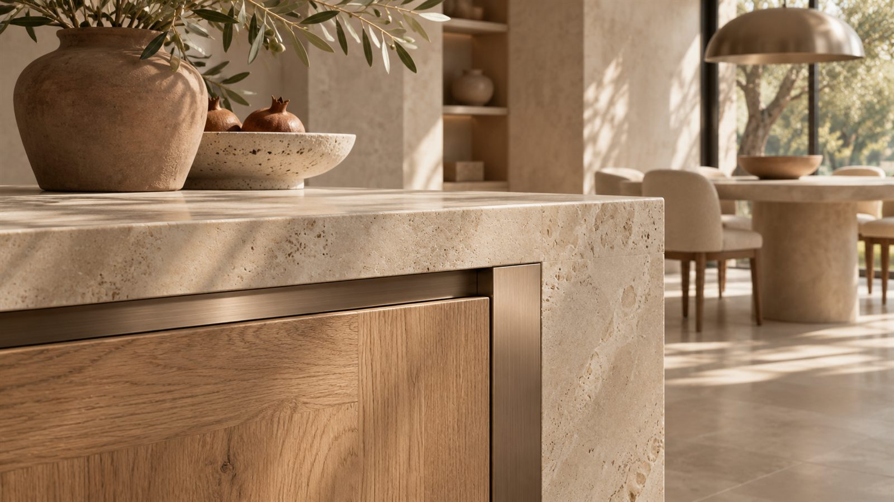

Прочная
поверхность
Очистка, грунтование и проверка плоскостей.

Ремонт квартир под ключ
От пустых стен до последнего выключателя. Сначала согласуем состав работ, затем приступим к ремонту.
Рассчитать ремонтКазань и ближайшие районы
Три слоя одной стены. На каждом этапе проверяем основание, чтобы финиш выглядел так, как задумано.
Очистка, грунтование и проверка плоскостей.
Выравнивание и подготовка под выбранное покрытие.
Образец выкрасов и согласование фактуры.
Условная схема. Материалы подбираются под основание и условия помещения.
Подготовка помещений, черновые работы, согласованные инженерные трассы, чистовая отделка и уборка после ремонта.
Перепланировка, мебель, оборудование, закупка и доставка материалов. Дополнительные работы фиксируются до выполнения.
От 20 до 200 м². Материалы рассчитываются отдельно.
Пример — концепт для портфолио
Точная смета составляется после осмотра и согласования ведомости.

Можно начать с обмеров и ведомости работ. Перепланировку и сложные инженерные решения нужно отдельно проверить и согласовать.
После осмотра составляются объёмы, перечень материалов и смета. Условия дополнительных работ фиксируются отдельно.
Это зависит от состава работ. При замене коммуникаций и мокрых процессах обычно требуется временный переезд.
Площадь, состояние помещения и желаемый результат помогут подготовить смету.
Форма показывает сценарий заявки. Данные не отправляются и не сохраняются.